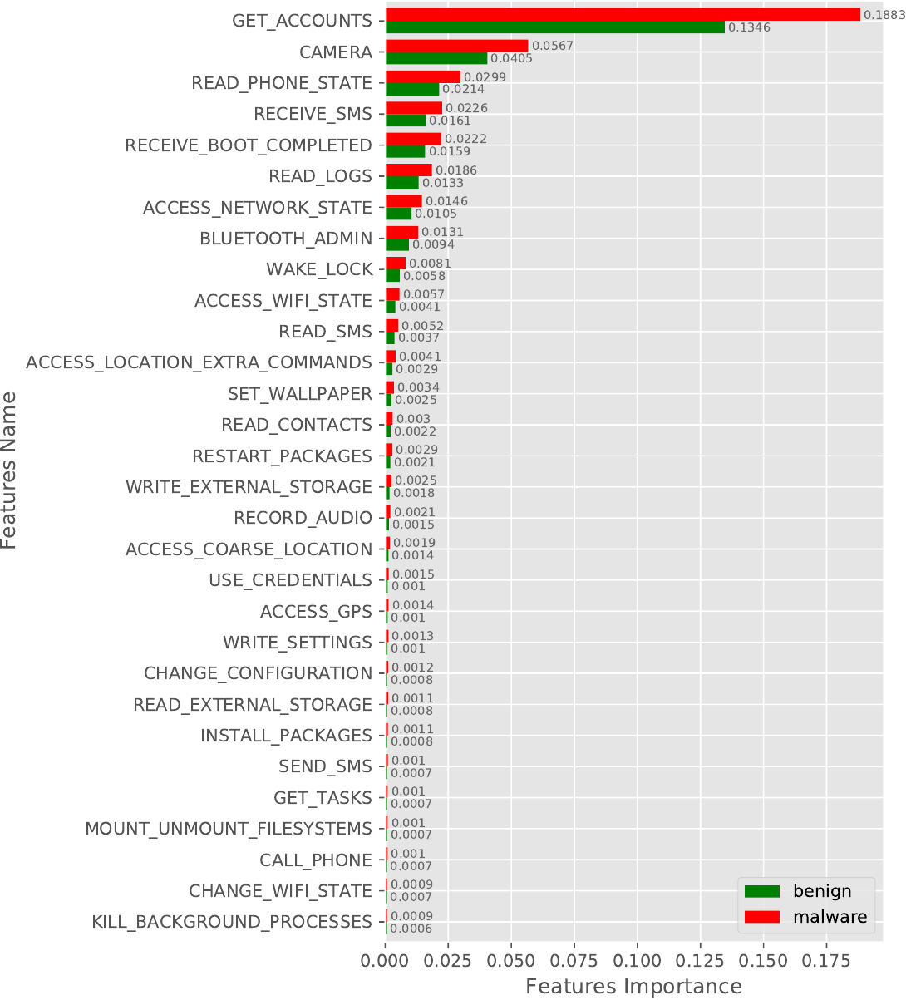
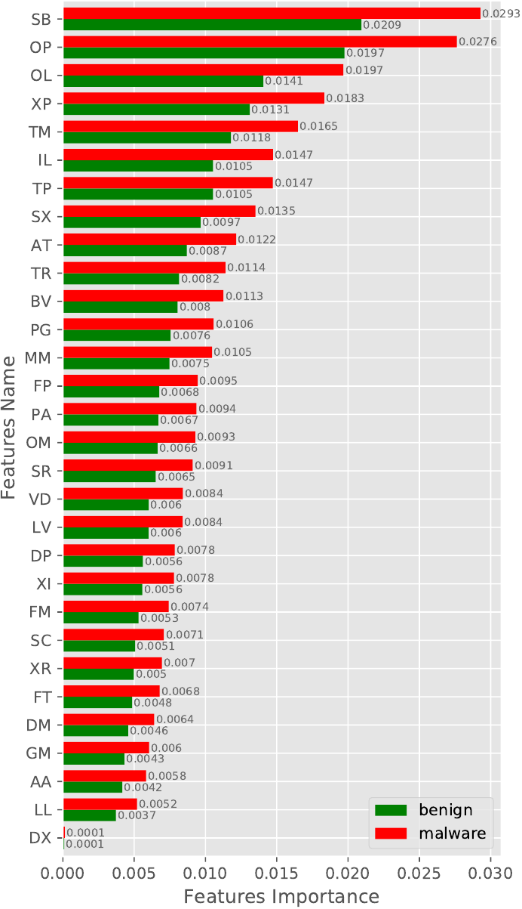

The feature used in DeepDetect are as follows:
(i) Numeric Features: List of numeric feature used are as follows:
(ii) Requested Permissions: The list of requested permission used are as follows:
(iii) 2-Gram Opcode Sequence: The 2-Gram opcode sequence used in DeepDetect are shown bellow. To know about the Reduce instruction set symbols, plese see Table 1.
| Symbol | Description |
| A | Arithmetic operation instructions |
| B | Branch instruction (Conditional jump like if-eq). |
| C | Comparision instruction like cmpl-float |
| D | Data Definition instructions like const/4 |
|
F | Type conversion instructions (int-to-long, int-to-float) |
| G | Get instructions (aget, aget-wide) |
|
I | Method call instructions (invoke-direct, invoke-virtual ...) |
| J | Jump instructions (Unconditional) like goto. |
|
L | Lock instruction, the use to acquire/release a lock |
| (monitor-enter and monitor-exit) | |
|
M | Data manipulation instruction like move and its variants |
| O | Exception instruction (through) |
| P | Put instructions (aput, aput-wide) |
| R | Return instruction like return-void |
| S | Bit-wise operation instructions (and-int, shl-int) |
| T | Type judgement like check-cast |
| V | Array operation instructions like array-length |
| X | switch case instructions |
In this experiment, we show the quality of our features concerning classes, i.e., malware and benign. For the experiment, we train a random forest model on our training set for both categories of features individually, i.e., selected requested permissions and 2-Gram opcode sequence. The importance of both the feature set is shown in Figure 1. Figure 1(a) shows the top 30 requested permission’s feature importance while the feature importance of the 2-Gram opcode sequence is projected in Figure 1(b).
In Figure 1(a), we observe a large difference in the feature importance of GE_ACCOUNT permission between malware and benign, which indicates how well this feature can distinguish malware from benign App. Similarly, when we observe the feature importance of the 2-Gram opcode sequence, then a Bit-wise instruction followed by a branch instruction (SB feature in Figure 1(b)) is more important for the identification of malware and benign. We observes such difference in all the features for both the feature set, which shows the quality of features in distinguishing malware from benign.
| 
(a)
Requested
Permissions
(top
30). |
| 
(b)
2-Gram
Opcode
sequence.
|
We have also conducted a similar experiment with new samples (AndroZoo-2019) and obfuscated malware samples by including benign samples from AndroZoo-2019. The feature importance result for new and obfuscated samples are shown in Figure 2 and Figure 3, respectively.